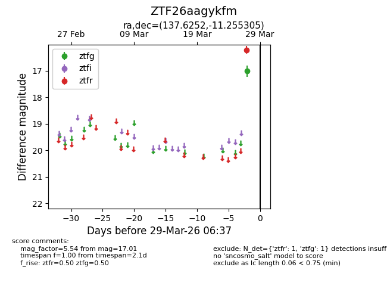
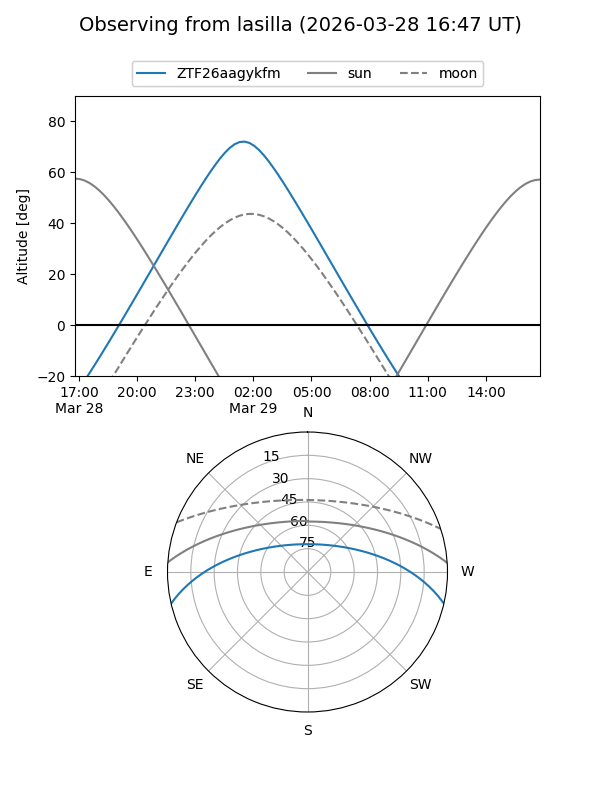
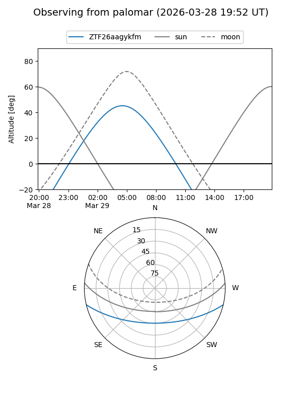

ZTF26aagykfm
Target ZTF26aagykfm at 2026-03-29 06:40
Aliases and brokers:
FINK: link
Lasair: link
ALeRCE: link
alt names
ZTF26aagykfm (ztf,fink_ztf)
Coordinates:
equatorial (ra, dec) = 137.6252,-11.25531
equatorial (HMS+DMS) = 09:10:30.04,-11:15:19.10
galactic (l, b) = (240.9500,+24.12511)
Flags:
Photometry:
last ztfg=17.01, ztfr=16.22
1 ztfg, 1 ztfr detections
Lightcurve

Visibility


Additional plots